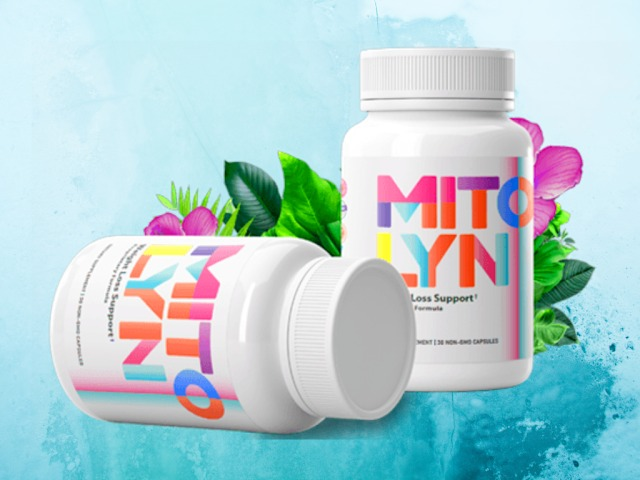
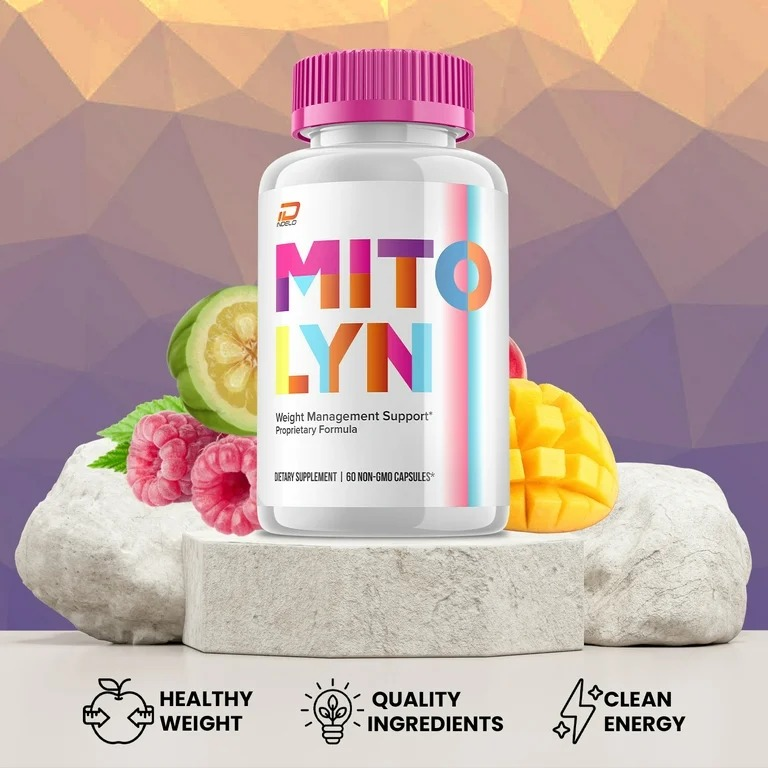

Discover evidence-based strategies to improve cellular energy, metabolic efficiency, and long-term vitality through modern science and lifestyle optimization.


Some readers choose to explore additional nutritional support as part of their routine. For transparency, we may reference trusted external resources when relevant.
Mitochondria are responsible for producing ATP, the primary energy molecule used by the human body. Every cell depends on efficient mitochondrial function to maintain performance, cognitive clarity, and metabolic balance.
As modern lifestyles evolve, factors such as poor sleep, processed foods, and chronic stress may negatively impact mitochondrial efficiency. This makes targeted lifestyle strategies increasingly important.
Scientific research suggests that energy production is influenced by multiple variables including nutrient intake, physical activity, hormonal balance, and oxidative stress levels.
Improving mitochondrial performance may involve:
These approaches form the foundation of long-term metabolic health and sustainable energy production.
It refers to how efficiently your cells produce energy and maintain metabolic balance.
Factors like stress, sleep quality, and cellular efficiency all play a role beyond diet alone.
Yes. Evidence shows consistent habits significantly impact mitochondrial performance.
They are optional and should complement — not replace — healthy lifestyle foundations.